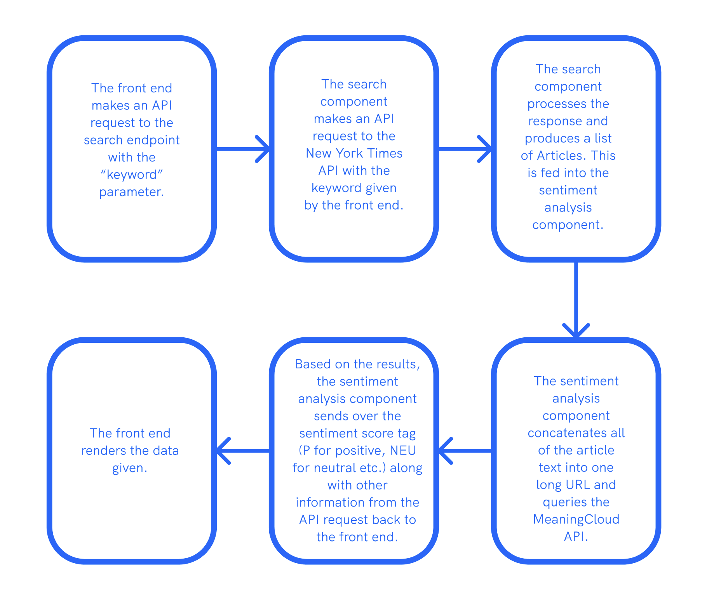

I worked as a part of a group of 4 on a full-stack application that, based on a user’s inputted query, retrieved relevant New York Times articles and displayed the general sentiment rating associated with those articles (positive, neutral, or negative) using the MeaningCloud API.
I was in charge of the logic for querying the New York Times API, compiling and processing the useful information, and passing it to the sentiment analysis component. I also implemented caching logic for both the searching and sentiment analysis components.
Since the four of us were all working on separate components, we communicated extensively on what the expected input and output would look like from each of our components.
Specifically in between the group member in charge of sentiment analysis and I, we decided on sharing a central response creator class that took each of our components as parameters. This class’s logic would be simple: it would take the given keyword, feed it into the search component, feed the output directly into the sentiment component, then pass the generated output back to the front end. This allowed us to develop our components separately and then latch them together at the end.
We also decided to pass around a List<Article> from one component to the next. We decided on a custom Article class that contained information like relevant keywords, abstract, and 8 other categories of information because we wanted to provide guarantees on what information was available.
This is the general flow of execution:
My role in this project was mainly working on processing the New York Times API data and filtering out and formatting the information in a way that is usable by the front end.
When making a request to the New York Times API, the response is a list of large JSONs with many parameters. To create the final Article object, I kept and processed the following parameters:
Out of these parameters, we chose to use the lead paragraphs in our sentiment analysis, since the lead paragraph usually contains the general stance of the article. The rest of the parameters were used for display purposes, and the keywords were used to perform relevant queries if the user desired.
To avoid the redundancy of repeatedly querying the New York Times API and MeaningCloud API for identical keywords, I constructed a cache that stored previously generated results using the Google Guava Cache API. The cache would contain mappings of keywords to serialized JSONs of the articles and sentiment results. This way, the front end would be able to retrieve results fast for queries that have already been performed, which is very useful for popular keywords.
This was not my first experience working on a full-stack project, but it was my first time working on a larger-scale full-stack project with a group. Through this, I realized how key communication was in such an environment: setting code aside to decide on a well-defined design as a group helped us work efficiently in parallel, and integrating the components together was a very smooth process.
In addition, this project also challenged me to think carefully about design decisions within my own component. Because I was creating this functionality from scratch, I often found myself thinking about tradeoffs between designs (should I leave this data in a list or construct a class?), which was a very stimulating experience. I was also able to gain further exposure to using Java Spark and the Google Guava Cache API.
Overall, this was a very enjoyable trip into full-stack development, and I not only refined my skills in back end development but was also able to learn more about React from my front-end oriented group mates!